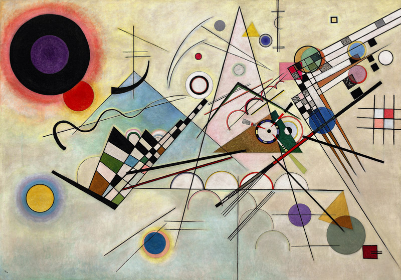
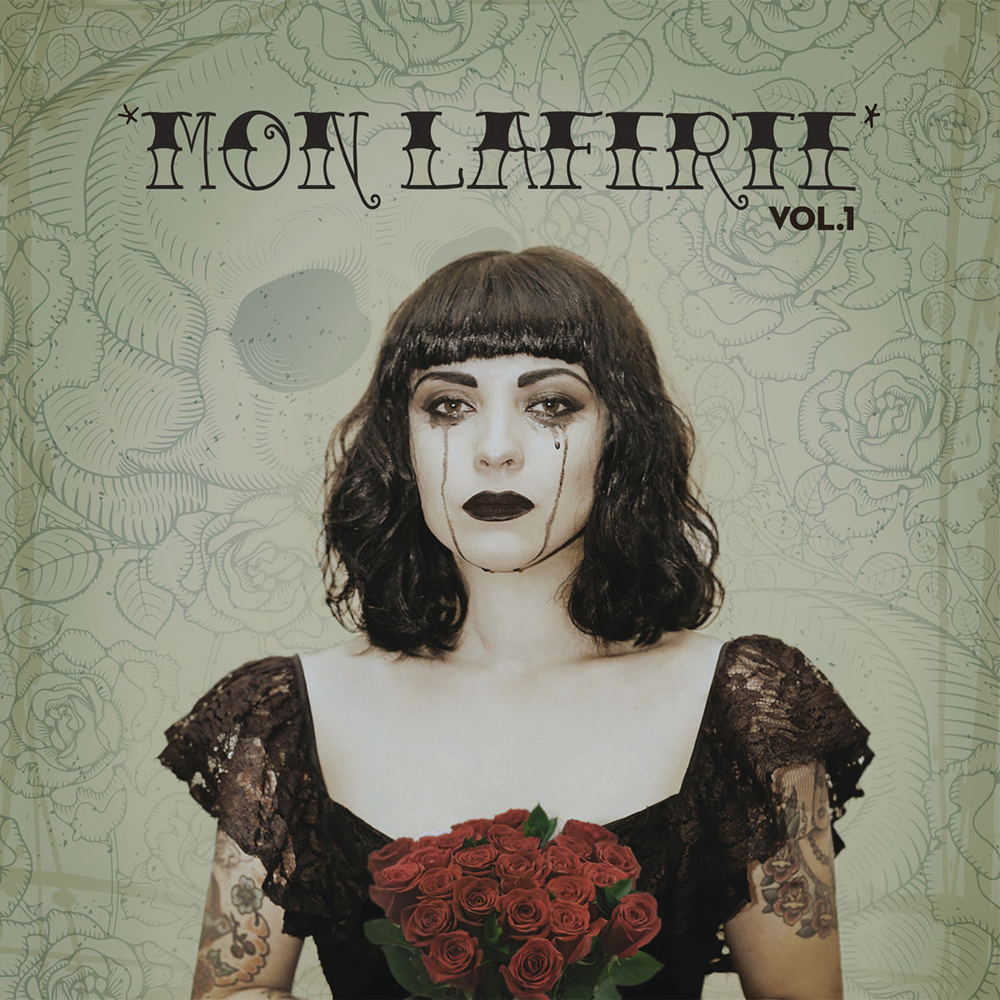
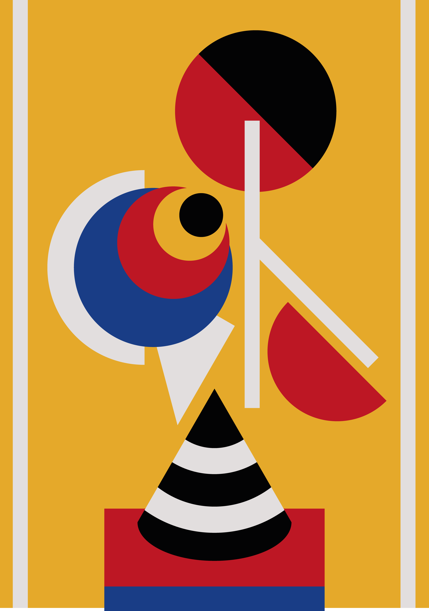
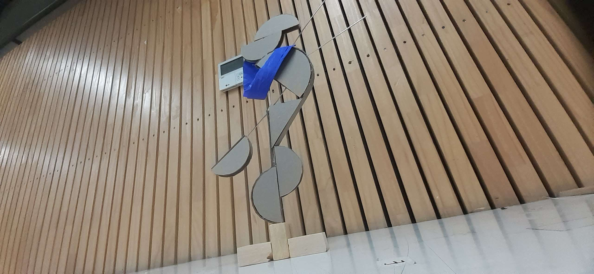
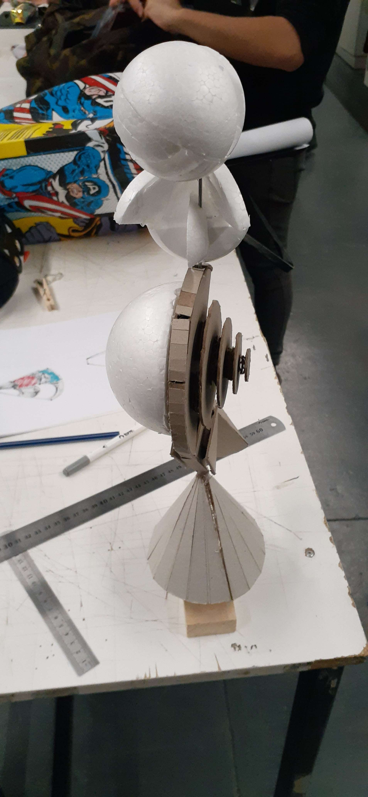
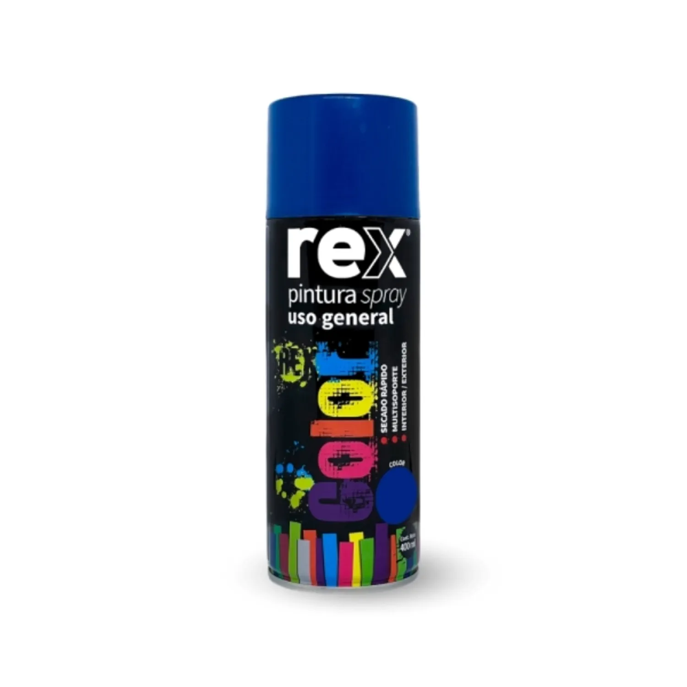
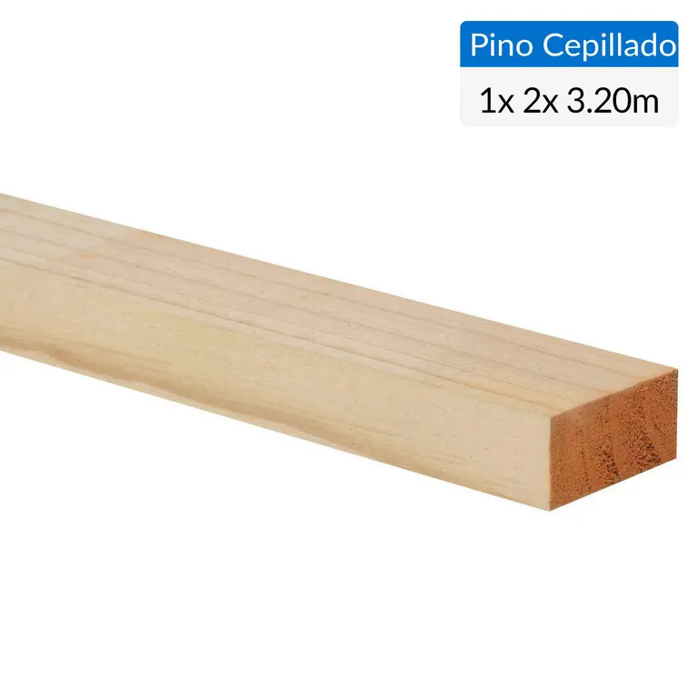
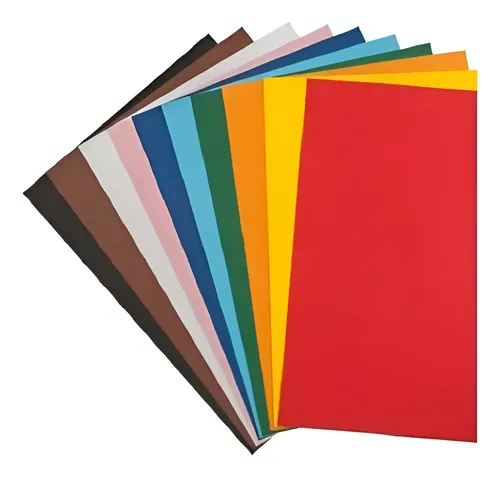
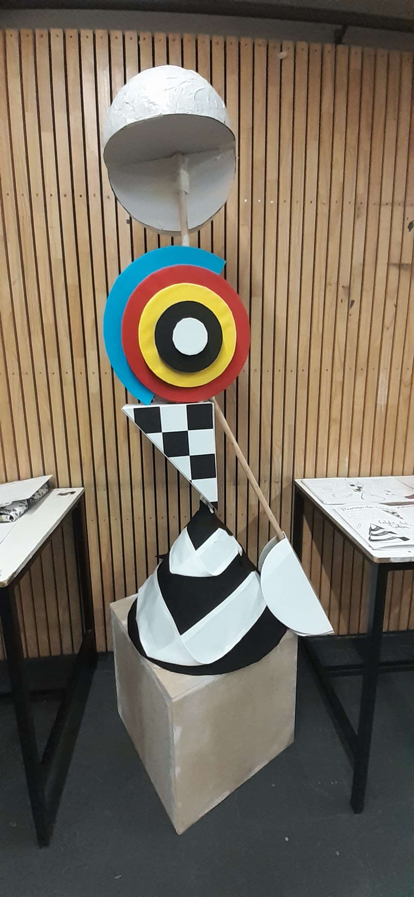
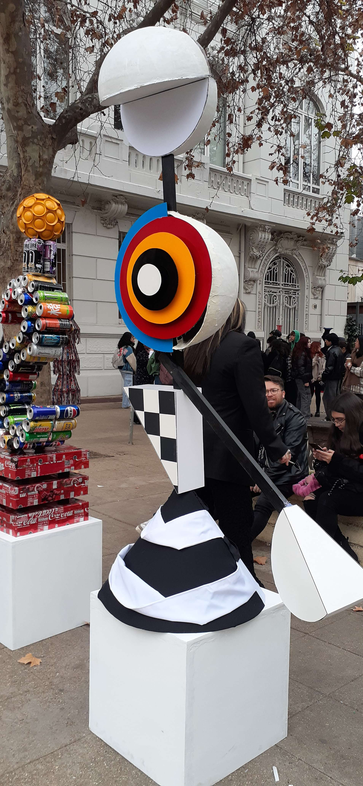

Tótem
Este es un proyecto de diseño de un tótem que realizamos el primer año de la carrera. La idea era crear un tótem a partir del arte de dos artistas diferentes, en este caso, Wassily Kandinsky y Mon Laferte. El tótem debía reflejar la esencia de ambos artistas y fusionar sus estilos en una sola pieza.
Concepto

Obra Composición 8 de Wassily Kandinsky

Mon Laferte Vol. 1
Wassily Kandinsky fue un pintor ruso, pionero del arte abstracto. Utilizaba colores, líneas y figuras geométricas para expresar emociones y movimiento. Mon Laferte es una cantante y artista visual chilena-mexicana. Su obra combina emociones intensas, colores vibrantes y simbolismos relacionados con el amor, el dolor y la identidad. Estos dos artistas, aunque sean de diferentes disciplinas, comparten un enfoque en la expresión emocional y el uso del color y la forma para transmitir sentimientos. La fusión de sus estilos en el tótem busca capturar la esencia de ambos, creando una pieza que refleje tanto la abstracción de Kandinsky como la intensidad emocional de Mon Laferte.

Proceso


Maquetas
Nuestra primera maqueta fue un prototipo inicial que nos permitió explorar la expresión y la forma del tótem. A partir de esta maqueta, realizamos ajustes para que se viera un poco más tridimensional y tuviera un mejor equilibrio visual. La segunda maqueta reflejaba estos cambios.
Materialidad
- Listones 2x1
- Cartón piedra
- Vendas de yeso
- Cartulina española
- Pintura en spray



Producto final

